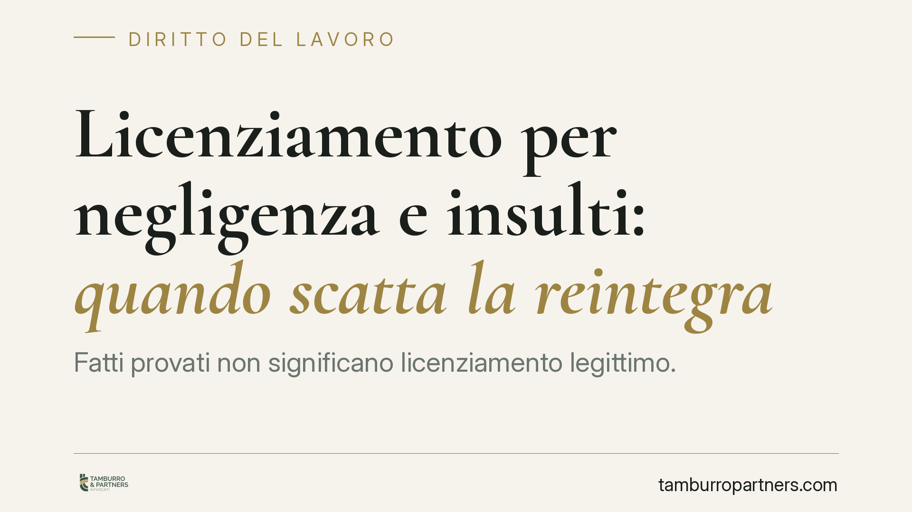

Licenziamento per negligenza e insulti: quando scatta la reintegra
Fatti provati non significano licenziamento legittimo. La Corte d'Appello di L'Aquila ha confermato la reintegra di un carrellista licenziato per negligenza e insulti a un collega: il CCNL metalmeccanici, per quelle condotte, prevedeva solo sanzioni conservative. Da qui la tutela reale attenuata e un risarcimento limitato. Un caso che ricorda quanto conti la qualificazione contrattuale della condotta.

Il caso
Un carrellista di un'azienda metalmeccanica viene licenziato per giusta causa. Gli addebiti: negligenza nello svolgimento delle mansioni e insulti rivolti a un collega. L'istruttoria conferma che i fatti sono accaduti. Nonostante questo, la Corte d'Appello di L'Aquila conferma la reintegra del lavoratore.
Il punto decisivo non è stata la prova dei comportamenti contestati, ma la loro qualificazione alla luce del contratto collettivo. Il CCNL metalmeccanici, per condotte di quel tipo, non prevede il licenziamento, ma sanzioni conservative: richiamo, multa, sospensione. Il recesso, in altre parole, era sproporzionato rispetto a quanto previsto dalle stesse parti sociali.
Inquadramento normativo
La decisione ruota attorno all'art. 18, comma 4, della Legge 300/1970 (Statuto dei lavoratori), nella versione applicabile ai rapporti anteriori al Jobs Act. La norma prevede la cosiddetta tutela reale attenuata: quando il fatto contestato esiste ed è imputabile al lavoratore, ma rientra tra le condotte per cui il contratto collettivo prevede una sanzione conservativa, il giudice annulla il licenziamento e dispone la reintegra.
La reintegra, in questo caso, è accompagnata da un risarcimento limitato: un'indennità commisurata all'ultima retribuzione globale di fatto, nel tetto massimo di dodici mensilità. È una tutela più contenuta rispetto a quella prevista per i licenziamenti radicalmente illegittimi, ma pur sempre reintegratoria.
Il ragionamento è lineare: se le parti collettive hanno deciso che una certa condotta merita al massimo una sospensione, il datore di lavoro non può trasformarla autonomamente in causa di espulsione. La proporzionalità tra fatto e sanzione, qui, è già stata fissata dal contratto.
La questione della ritorsione
Il lavoratore aveva anche sostenuto la natura ritorsiva del licenziamento, cioè una reazione illecita del datore a un comportamento legittimo del dipendente. La Corte ha escluso questa lettura. La differenza non è secondaria: se il recesso fosse stato giudicato ritorsivo, sarebbe scattata la tutela reale piena, con risarcimento integrale dall'allontanamento alla reintegra. Esclusa la ritorsione, si applica invece la tutela attenuata con il tetto delle dodici mensilità.
Implicazioni pratiche
Per il datore di lavoro, la pronuncia conferma un principio spesso sottovalutato: provare il fatto non basta. Prima di procedere al licenziamento disciplinare, occorre verificare come il CCNL applicabile qualifica quella specifica condotta. Un comportamento sanzionabile sulla carta può rivelarsi insufficiente a giustificare il recesso se il contratto lo colloca tra le infrazioni minori.
Per il lavoratore, la decisione segnala che la contestazione dei fatti non è l'unica linea difensiva. Anche ammettendo l'accaduto, è possibile ottenere l'annullamento del licenziamento dimostrando che la sanzione espulsiva è sproporzionata rispetto alla previsione collettiva.
Resta centrale il tema della disciplina applicabile nel tempo. L'art. 18 nella versione qui applicata riguarda i rapporti instaurati prima del 7 marzo 2015. Per le assunzioni successive vige il regime del D.Lgs. 23/2015 (contratto a tutele crescenti), dove la reintegra per sproporzione disciplinare è più limitata.
Cosa fare in concreto
- Verifica il CCNL prima di contestare: individua la condotta nel codice disciplinare e controlla quale sanzione è prevista. Se è conservativa, il licenziamento è esposto all'annullamento.
- Documenta la proporzionalità: in sede di contestazione, ricostruisci la gravità del fatto con elementi oggettivi, non con valutazioni generiche.
- Identifica la disciplina temporale: stabilisci se al rapporto si applica l'art. 18 o il regime a tutele crescenti, perché cambiano radicalmente le conseguenze.
- Per il lavoratore, valuta la doppia difesa: contestazione dei fatti e, in subordine, sproporzione della sanzione rispetto al contratto.
- Agisci nei termini: il licenziamento va impugnato entro 60 giorni, con deposito del ricorso o tentativo di conciliazione nei 180 giorni successivi.
Consigliamo di non affidare la gestione del procedimento disciplinare a modelli standardizzati: la qualificazione della condotta rispetto al contratto collettivo è un passaggio tecnico che incide direttamente sull'esito del contenzioso.
Disclaimer
Contributo informativo a cura di Tamburro & Partners - Avv. Giuseppe Tamburro. Non costituisce parere legale.
Ogni storia di lavoro ha i suoi tempi.
Se gestisci HR e vuoi un confronto su contenzioso, ispezioni o licenziamenti, scrivi allo studio. Ti rispondiamo entro un giorno lavorativo.